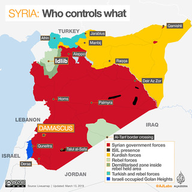

Invasión estadounidense de Afganistán
La guerra de Afganistán fue una guerra que enfrentó en principio al Emirato Islámico de Afganistán, gobernado por los talibanes, y, una vez derrocado este, a su insurgencia, por un lado, y a una coalición internacional comandada por los Estados Unidos, por el control del territorio afgano, y que continúa como Guerra de Afganistán (2015-presente). Comenzó el 7 de octubre de 2001 con la «Operación Libertad Duradera» del Ejército estadounidense y la «Operación Herrick» de las tropas británicas, lanzadas para invadir y ocupar el país asiático. La invasión se desató en respuesta a los atentados del 11 de septiembre de 2001 en Estados Unidos, de los que este país culpó a Osama bin Laden. Para iniciar la invasión, Estados Unidos se amparó en una interpretación peculiar del artículo 51 de la Carta de las Naciones Unidas, relativo al derecho a la legítima defensa.
El objetivo declarado de la invasión era encontrar a Osama bin Laden y otros dirigentes de Al Qaeda para llevarlos a juicio, y derrocar el gobierno del Emirato Islámico de Afganistán gobernado por el emir mulá Omar, que a juicio de las potencias occidentales apoyaba y daba refugio y cobertura a los miembros de Al Qaeda. La Doctrina Bush de Estados Unidos declaró que, como política, no se distinguiría entre organizaciones terroristas y naciones o gobiernos que les dan refugio.
En principio existieron dos operaciones militares luchando por controlar el país. La «Operación Libertad Duradera» fue una operación de combate estadounidense con la participación de algunos países de la coalición y que se llevó a cabo principalmente en las regiones del sur y del este del país a lo largo de la frontera con Pakistán. En esta operación participaron unos 28 300 militares estadounidenses aproximadamente.
En la invasión, Estados Unidos y Reino Unido llevaron a cabo la campaña de bombardeo aéreo, con fuerzas terrestres proporcionadas fundamentalmente por la Alianza del Norte. En 2002, fue desplegada la infantería estadounidense, británica y canadiense, avanzando con fuerzas especiales de varias naciones aliadas como Australia. Posteriormente se sumaron las tropas de la OTAN.
 Conflicto Palestina-Israel |
 Guerra Irán-Irak |
|  Guerra civil siria |
 Guerra civil yemení |